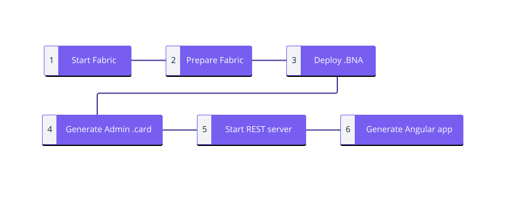

Writing Web Applications
To interact with a deployed business network, web applications should make REST API calls. To create a custom REST API for a business network, use the composer-rest-server command.
To create a skeleton Angular application that can interact with the REST API, use the yo hyperledger-composer command.
Please follow the Developer Tutorial for an example of how to use the composer-rest-server and the Angular generator.
Generating an Angular application from a Business Network Archive (.BNA)
The flow for building an Angular application is as follows:

If you already have a Business Network Archive and would like to build a skeleton Angular application, use the following reference instructions, if you would like to fully understand how to develop a BNA from scratch and build an application from there please see the Developer Tutorial.
Prerequisites
- You will need the IBM Blockchain Platform: Develop development tools in order to run the Angular generator.
- A Business Network Archive (.BNA) you would like to deploy.
1. Start Hyperledger Fabric running on your local machine
If you have already installed the development tools you will have Hyperledger Fabric already installed.
Head to the fabric-dev-servers directory and start Hyperledger Fabric. The following code is an example if you have used our development tools install guide:
cd ~/fabric-dev-servers
./startFabric.sh
./createPeerAdminCard.sh
This will also create a PeerAdmin .card file which is needed to modify code running on the peers of your deployment.
You can list all of the cards you have installed at any time by running the following command:
composer card list
2. Prepare the Hyperledger Fabric peers
In order to install the Business Network Archive onto the Hyperledger Fabric network you need to install the business network onto the peers. It is recommended you start with a clean directory. Move your BNA into that directory and change your terminal directory to it.
You will need to have the Business Network archive to do this, below you can see an example with tutorial-network along with the 'PeerAdmin' card for your deployment.
composer network install --card PeerAdmin@hlfv1 --archiveFile tutorial-network@0.0.1.bna
3. Start your Business Network on your Hyperledger Fabric
We will use the composer network start command to start the business network, we will need to use our PeerAdmin card to do this. We will also need to create a user on our network, we will use an "Admin" username and password to get started.
Below is an example using a tutorial-network BNA.
composer network start --networkName tutorial-network --networkVersion 0.0.1 --networkAdmin admin --networkAdminEnrollSecret adminpw --card PeerAdmin@hlfv1
This will create an 'admin' card for the business network, which for the previous example is admin@tutorial-network.card
Please note: The admin username and adminpw secret are for a specific Hyperledger Fabric identity configured for the instance of Hyperledger Fabric deployed in the Developer Tutorial. If you have configured a Hyperledger Fabric instance from scratch these identity details will be different.
4. Install the 'admin' card ready for use
We will next take the admin card we have just made and import it for use with your business network.
composer card import --file admin@tutorial-network.card
5. Start the REST server & generate the Swagger API documentation
Navigate to your directory and run the composer-rest-server command.
composer-rest-server
- Enter admin@tutorial-network as the card name. Make sure not to add the
.cardextension. - Select never use namespaces when asked whether to use namespaces in the generated API.
- Select No when asked whether to secure the generated API.
- Select Yes when asked whether to enable event publication.
- Select No when asked whether to enable TLS security.
The rest server will then be generated and available on http://localhost:3000/explorer
6. Generate the Angular application
The Angular application requires the rest server to be running to connect to the Fabric instance. Make sure you have the REST server running in the background when doing this. You will also need to be in the same directory as your .BNA file when running the Yeoman generator.
yo hyperledger-composer
Follow the below so your output matches.
Welcome to the Hyperledger Composer project generator
? Please select the type of project: Angular
You can run this generator using: 'yo hyperledger-composer:angular'
Welcome to the Hyperledger Composer Angular project generator
? Do you want to connect to a running Business Network? Yes
? Project name: [insert]
? Description: Hyperledger Composer Angular project
? Author name: [insert]
? Author email: [insert]
? License: Apache-2.0
? Name of the Business Network card: admin@tutorial-network
? Do you want to generate a new REST API or connect to an existing REST API? Connect to an existing REST
API
? REST server address: http://localhost
? REST server port: 3000
? Should namespaces be used in the generated REST API? Namespaces are not used
Created application!
The generated application will be within a sub directory named after the Project name entered above.
Finally enter this directory and to get the application running, run:
npm start
It will be available on http://localhost:4200